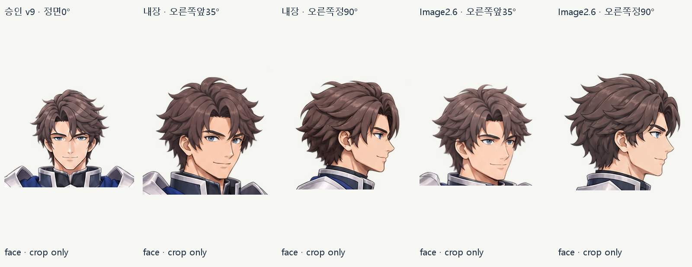
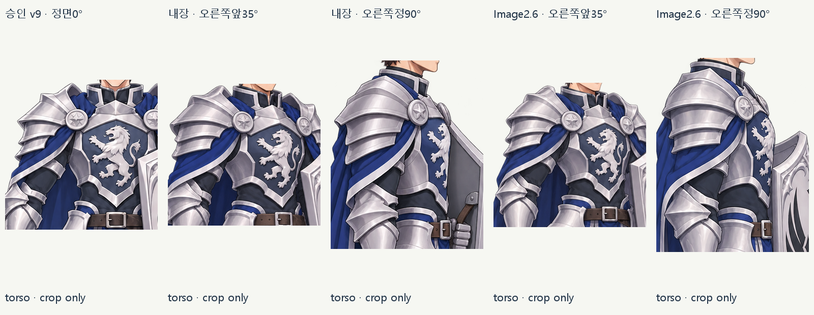
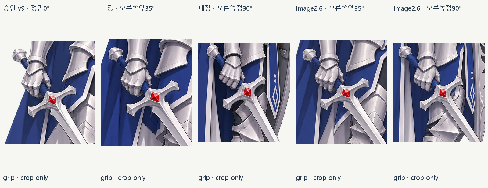
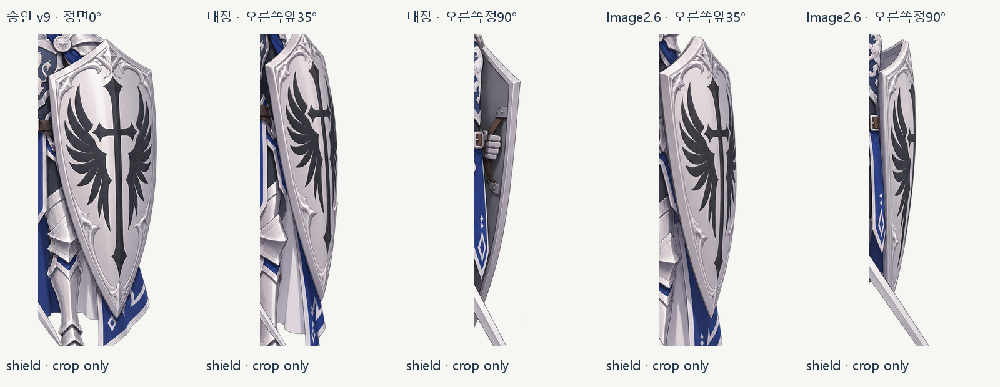

4장 생성은 완료했으나 검축/프레이밍 등 기술 미달이 남아 사용자 측면 합격과 구분합니다. 가려진 방패/갑주 뒷면은 추정입니다. SD/리깅은 진행하지 않았습니다.
내장 행 · 승인 정면0° 재사용
원본 PNG · 1024×1536 · 본체 1012px
내장 · 오른쪽앞35°
원본 PNG · 1024×1536 · 본체 1397px
내장 · 오른쪽정90°
원본 PNG · 1024×1536 · 본체 1350px
2.6 행 · 동일 승인 정면0° 재사용
원본 PNG · 1024×1536 · 본체 1012px
Image2.6 · 오른쪽앞35°
원본 PNG · 1024×1536 · 본체 1206px
Image2.6 · 오른쪽정90°
원본 PNG · 1024×1536 · 본체 1364px
부위 확대 대조 · crop 비율은 부위별 확대이며 전체 체형 비교가 아닙니다
face

torso

grip

shield

보고 · 검수/한계 · manifest · 생성/입력/usage